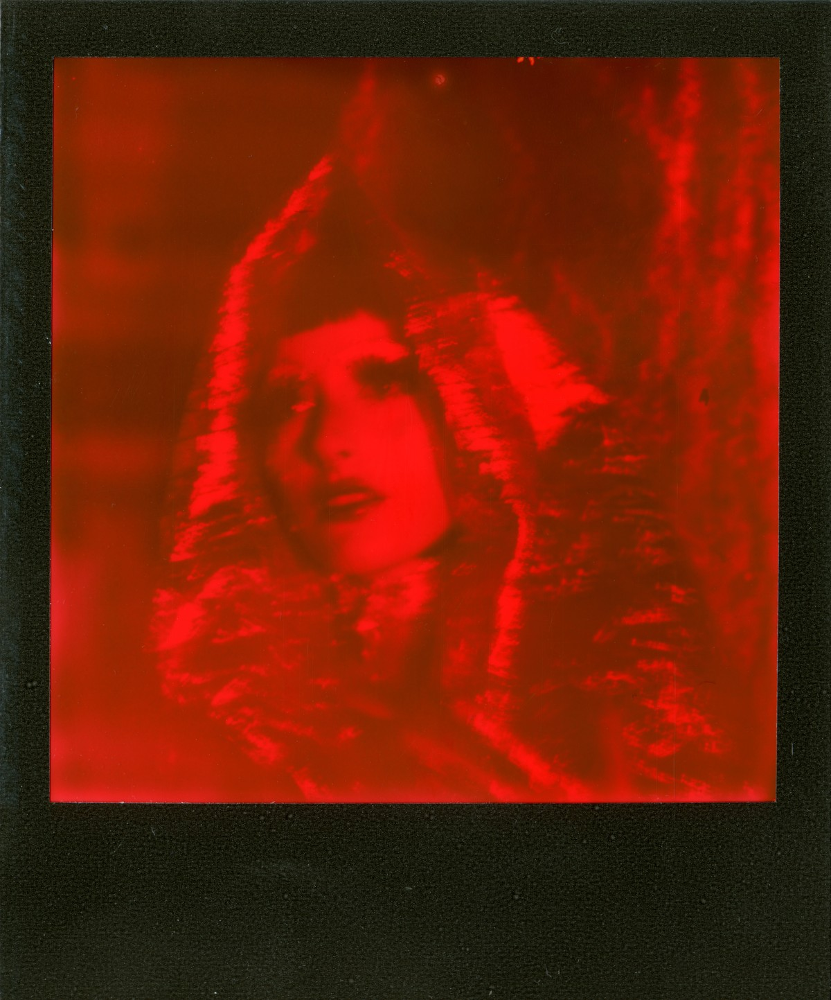
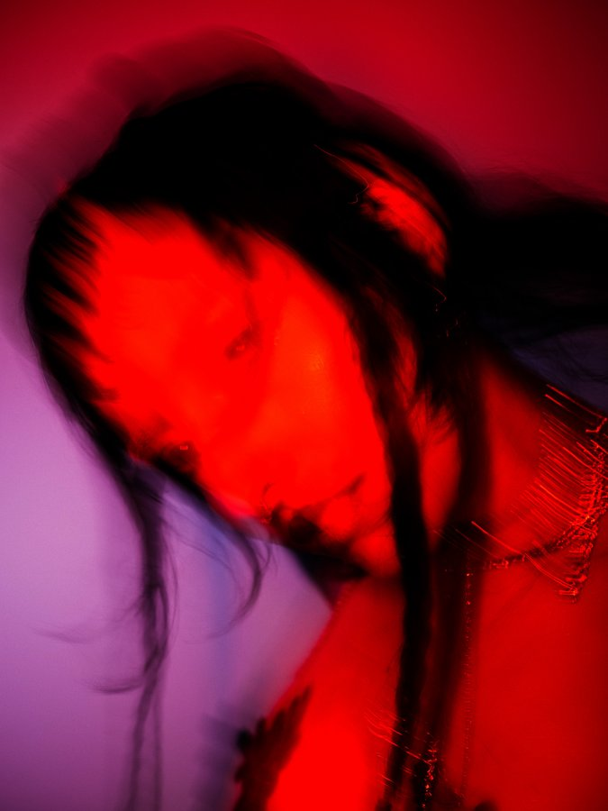
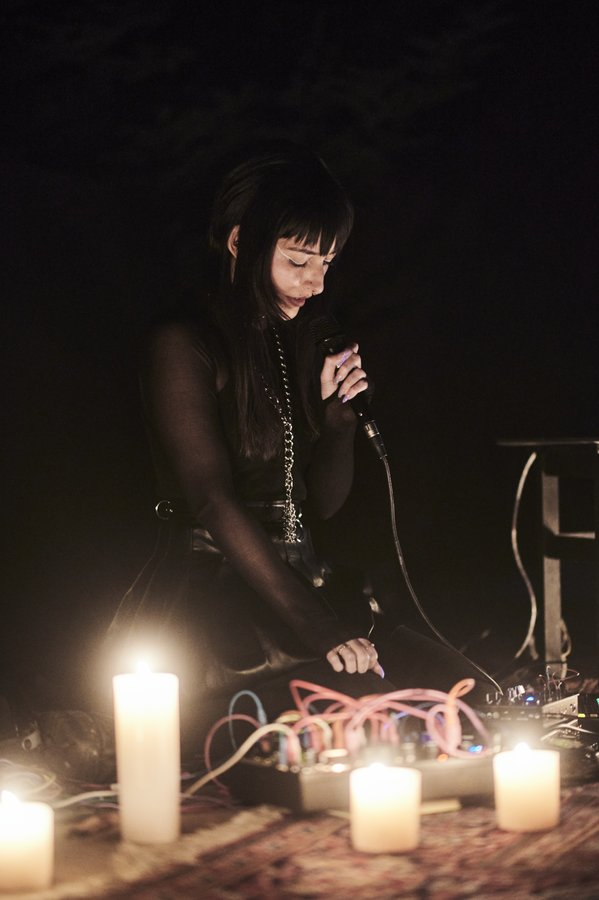
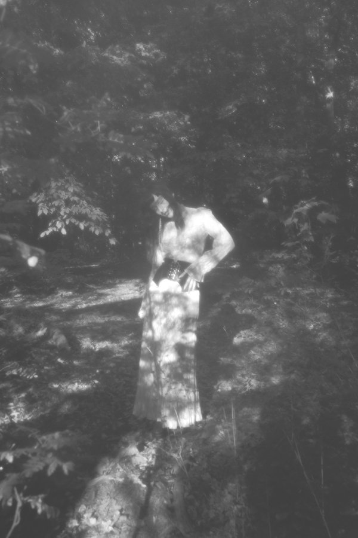
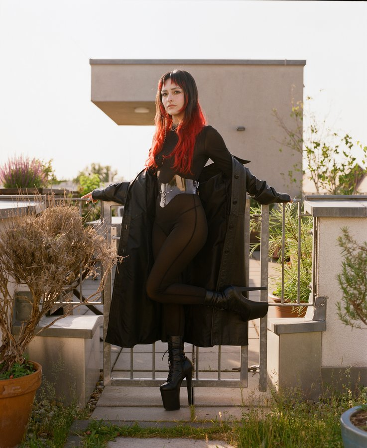
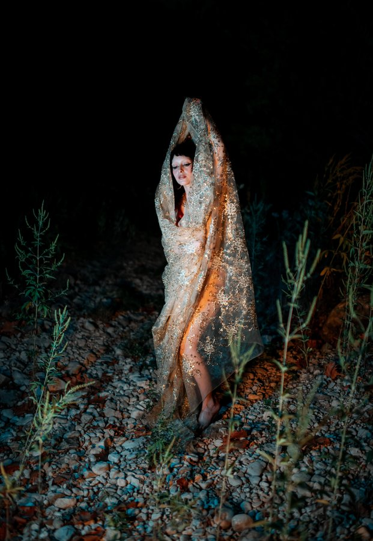
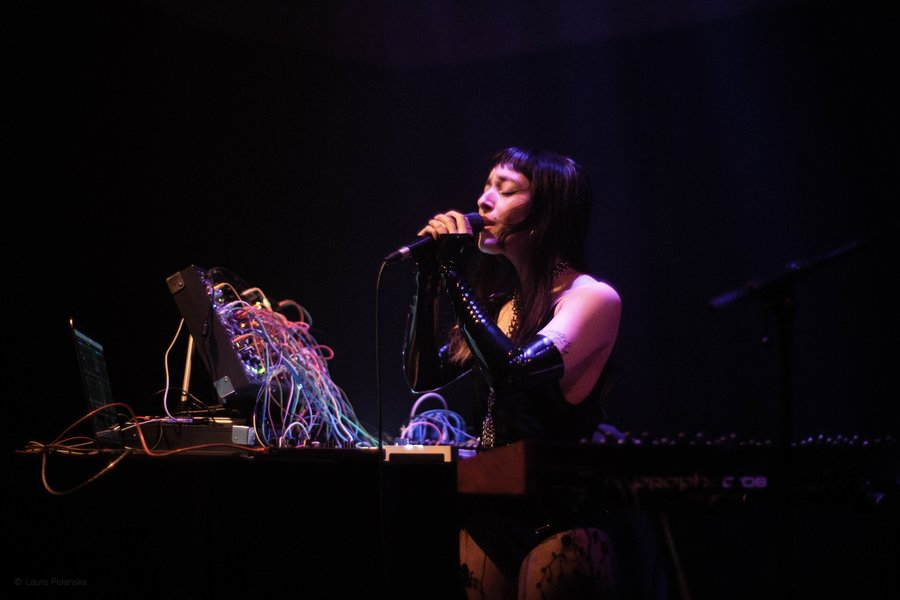
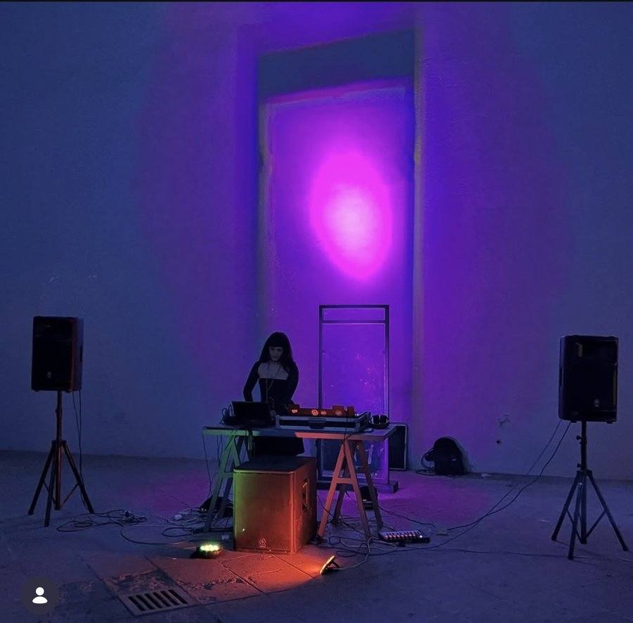

Twisted holy hymns: underworld angel vocals that wind through sonic falls from grace.
Experimental electronic musician based between Los Angeles, USA and Berlin, Germany. Their work orbits around devotional drone, altered states, and themes of modern intimacy. They have composed for film, dance-theater, and installations.
write me ✝





